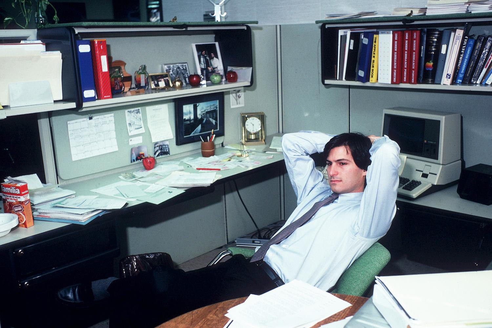

Welcome to my site.
100% Wix-free. Made using HTML from scratch.
Quality revision resource for Y12 AL CS, Unit 2 Communications, up to 2.1.5
Navigate using header menu above
Have fun!
Programmed by Charles Cheung 2025
Meanwhile, here's a picture of Steve Apple:
